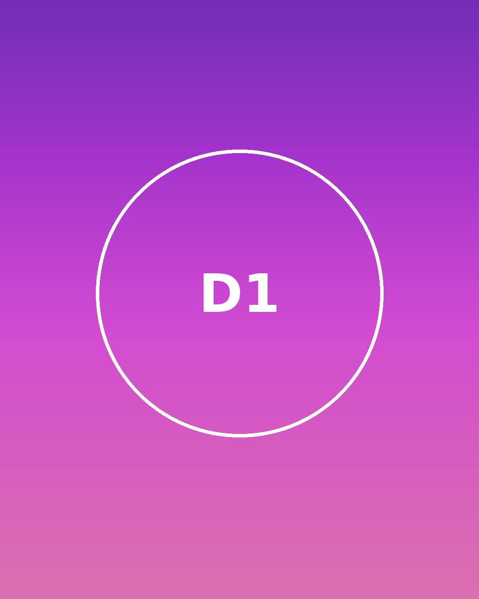
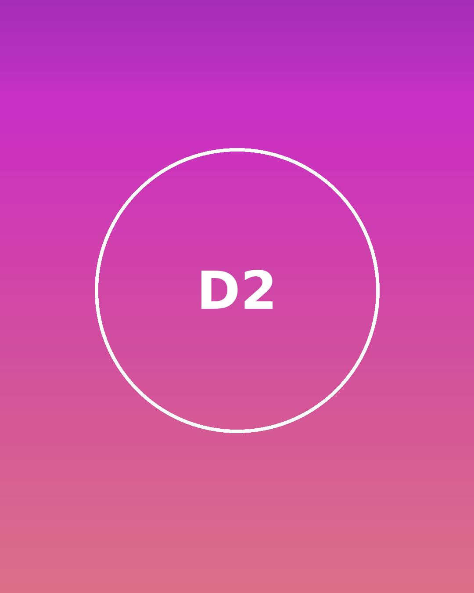
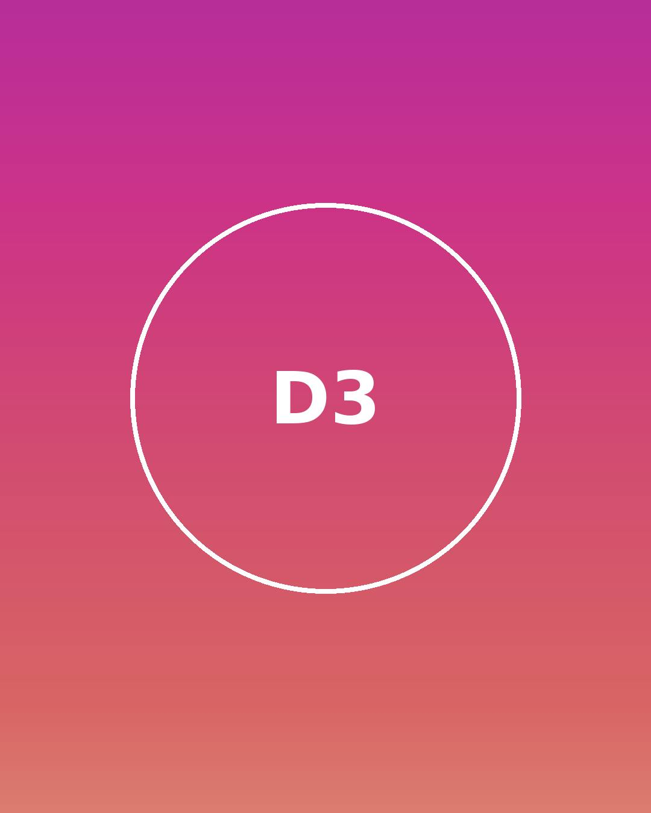
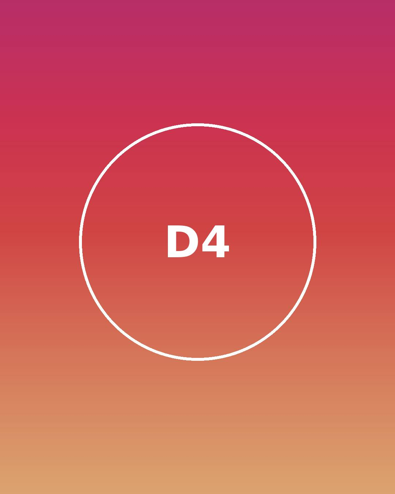
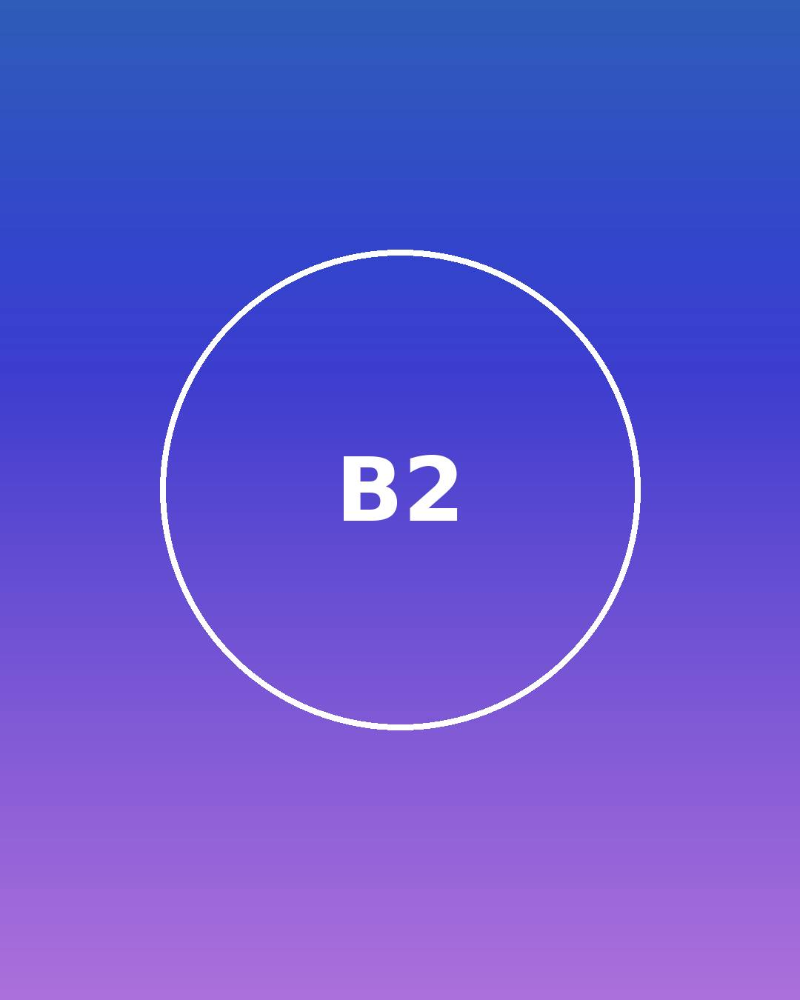
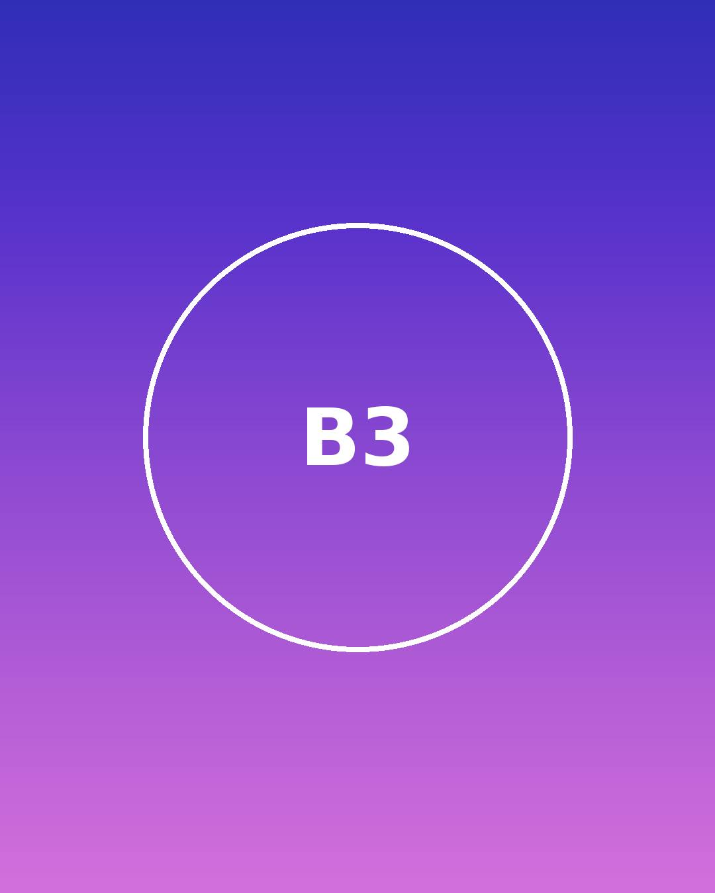
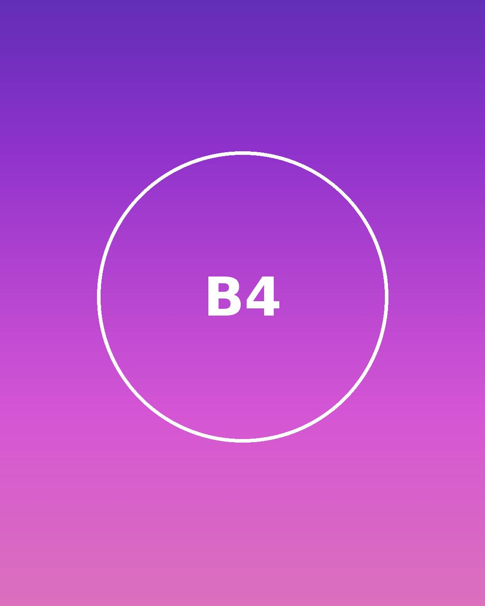
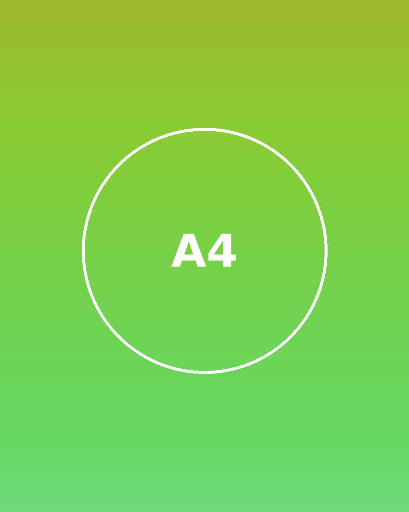

This is such a cool gallery! ❤️




Second gallery section = second post.



Fluid Engine post: image blocks + a video code block, ordered as they appear on screen (left-to-right, top-to-bottom). This caption is long enough that it will be clipped to two lines with an ellipsis — tap it to expand.
location: Portland, Oregon
date: March 3
guest.studio
Austin, TX
Another post: bold = account name, italic = location, a link to an image = profile picture.
Caption for the first gallery post, written in the code block.
Second post caption.
Third post caption.
location: Brooklyn, NY